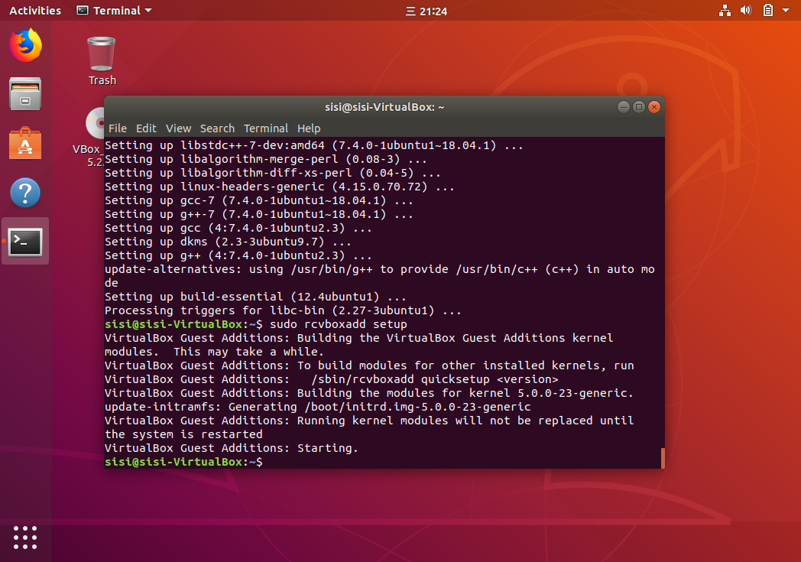

Windows安装虚拟机
Windows操作系统，想用Linux操作命令完成一些数据分析工作。本来想着或可用windows的shell代替，不妨在Windows的cmd或powershell中把要装的软件装上就好了，岂料我要装的东西不支持Windows我倒，行吧那就装个虚拟机吧，卑微的小电脑又要装新东西了。
下载VirtualBox和Linux ISO
首先到官网上下载VirtualBox和Linux ISO（这里选择Ubuntu）
VirtualBox, free and open source virtualization software from Oracle. download https://www.virtualbox.org/
Ubuntu Linux, ISO file of the Linux distribution. download https://ubuntu.com/desktop
这里强烈建议到网络好一些的地方，大概科学上网可以快很多。
先安装virtualbox，各步骤可见 https://itsfoss.com/install-linux-in-virtualbox/
大概唯一需要在对话框中操作的步骤是去掉勾选download updates while installing Ubuntu
在虚拟机上安装Linux
打开VirtualBox，点击New，自己取一个名字，type选Linux，version选Ubuntu(64bit)
容易发现version选项都只有32bit，这是因为BIOS中virtualization is blocked on your system。在Windows中打开BIOS，一按下开机键立刻按F1/F2/F12，打开BIOS，在configuration中找到Virtualization Technology改为Enabled.
- Allocate RAM to the virtual OS 在我的电脑属性中看到我的电脑内存8G，所以我给它2G
- Create a virtual disk 10G
- VDI file type
- Dynamically allocated
设置好后Start，选择前面下载的iso文件，启动后点击install Ubuntu，然后看自己的感觉按照提示继续就好了。安装系统的时候会比较耗时吧耐心等待……官网上说10-15min，大概在国外 是。。
安装完成后restart，yeah！Linux系统安装完成，这时可以把之前自己电脑上下载的那个iso文件拖进回收站了…
Install & Use VirtualBox Guest Additions on Ubuntu
安装使用 VirtualBox Guest Additions，可以使guest and host systems联系更紧密使用更方便。
- Host & Guest system
Host system is your actual operating system installed on your physical system.
Guest system is the virtual machine you have installed inside your host operating system.
几个重要的功能
- 鼠标指针集成: You no longer need to press any key to “free” the cursor from the Guest OS.
- 共享剪贴板: With the Guest Additions installed, you can copy-paste between the guest and the host operating systems.
- 拖放文件: You can also drag and drop files between the host and the guest OS.
- 共享文件夹: My favorite feature; this feature allows you to exchange files between the host and the guest. You can tell VirtualBox to treat a certain host directory as a shared folder, and the program will make it available to the guest operating system as a network share, irrespective of whether guest actually has a network.
- 调整虚拟机窗口大小和分辨率
更多可见 https://itsfoss.com/virtualbox-guest-additions-ubuntu/
点击devices，点击Insert Guest Additions CD image…，大概极有可能遇到（因为我遇到了） Could not mount the media/drive……报错。退出系统，打开 settings，in the Storage tab, click the little CD symbol and select ‘remove disk…’ 重新启动重复报错前的操作就可以成功Mount了！（重启万能
然后打开terminal，还要安装一些包，能用sudo真实太爽了，我就是管理员，再也不用去征求什么管理员权限了
1 | sudo apt install build-essential dkms linux-headers-generic |
1 | sudo rcvboxadd setup |
Using VirtualBox Guest Addition features 配置
重启后再配置
- 配置拖放任何文件
top menu -> Devices ->Drag and Drop -> Bidirectional
这个功能在一些版本的VirtualBox里可能不起作用，解决办法是改成单向host to guest，拖到文件夹里（2020.1.31）
配置共享剪贴板
top menu -> Devices -> Shared Clipboard -> Bidirectional更改虚拟屏幕分辨率
top menu -> View -> Virtual Screen 1 -> …
至此接下来就可以开始自由发挥，开始在终端敲命令啦！

reference:
https://itsfoss.com/install-linux-in-virtualbox/
https://itsfoss.com/virtualbox-guest-additions-ubuntu/